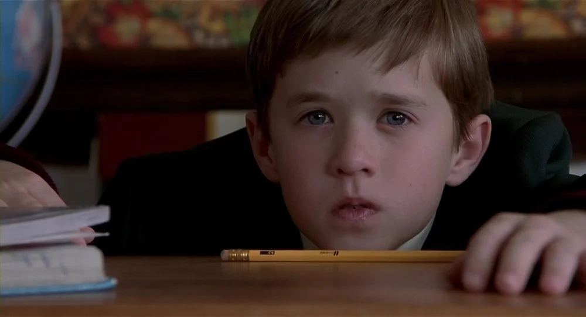

O medo do invisível

Um barulho no corredor escuro. Uma sombra que se move rápido demais. Os momentos mais arrepiantes do cinema de terror raramente mostram o monstro. Em vez disso, eles exploram algo muito mais profundo e universal: o medo do invisível. Filmes como O Sexto Sentido e A Bruxa de Blair são mestres em provar que aquilo que não vemos é infinitamente mais assustador.
Essa tática funciona porque dialoga diretamente com a nossa psicologia. Quando nosso cérebro não tem uma resposta visual para uma ameaça, ele preenche as lacunas com nossos piores medos, transformando nossa própria imaginação no verdadeiro vilão. É um truque que explora a ansiedade primitiva do medo do desconhecido e nos deixa vulneráveis.
Neste artigo, vamos mergulhar na filosofia por trás do medo do invisível. Analisaremos como grandes diretores usam o suspense para nos manipular, a conexão desse medo com o nosso folclore e por que essa sensação nos diz tanto sobre nós mesmos.
O Medo do Invisível é Parte da Natureza Humana
Sentir medo do que não se vê não é apenas uma tática de cinema; é uma reação natural do cérebro humano ao desconhecido. Quantas vezes você já ficou com receio ao ouvir um barulho estranho em casa à noite? Mesmo sem ver nada, sua mente começa a imaginar mil coisas: “Será um ladrão? Um espírito? Um alienígena?”
Esse tipo de reação é algo natural do ser humano. Nosso cérebro é treinado para identificar perigos mas, quando não consegue ver ou entender o que está acontecendo, ele preenche as lacunas com imaginação. E, convenhamos, nossa imaginação é muito mais criativa (e assustadora) do que qualquer monstro de CGI por aí.
O exemplo de O Sexto Sentido

Quem assistiu O Sexto Sentido provavelmente nunca esqueceu da famosa frase: “Eu vejo gente morta”. Mas o que torna esse filme tão perturbador não é só a revelação final ou os sustos. É a ambiguidade e o clima de tensão constante. O espectador nunca sabe quando algo vai acontecer e às vezes, nada acontece mesmo. Mas o medo já se instalou, porque o invisível está sempre ali, à espreita.
Suspense vs. Susto: O Poder de Não Mostrar o Monstro
Os melhores filmes de terror entendem que o medo do desconhecido é mais eficaz do que mostrar o monstro logo de cara. Pense bem: quantos filmes perderam o impacto quando revelaram a criatura na metade da história? O que antes era assustador vira algo meio bobo, como um bonecão de borracha mal feito.
Diretores como Alfred Hitchcock sabiam disso há décadas. Em “Os Pássaros”, a tensão é criada muito mais pelo que não nos é explicado do que pelas aves em si. Por que os pássaros estão atacando? Por que agora? Não saber a resposta deixa tudo ainda pior porque nossa mente busca sentido, e quando não encontra, ela cria as piores possibilidades.
+ Leia mais: Lições de coragem de Lorraine Warren para superar o medo
O mistério é combustível do medo
Você já ouviu falar da “teoria da incompletude”? A ideia é simples: nosso cérebro odeia quando falta uma peça no quebra-cabeça. Isso vale tanto para um filme quanto para uma conversa. E quando faltam informações, começamos a preencher os espaços com base nas nossas próprias vivências, medos e traumas.
- É por isso que cada pessoa pode ter medo de uma cena diferente.
- É o nosso medo pessoal que toma conta da narrativa.
É como brincar de esconde-esconde numa floresta. Você não vê ninguém, mas sente que algo está por perto. A ansiedade vai crescendo, porque você sabe que algo está lá, mesmo sem ver. E quando menos espera… nada acontece. Mas o coração já está acelerado.
A Raiz Filosófica: O Medo do Desconhecido

Do ponto de vista filosófico, o invisível representa o desconhecido. E o desconhecido sempre foi motivo de inquietação para nós. Desde os tempos antigos, as pessoas tentam entender os fenômenos ao seu redor: relâmpagos, eclipses, doenças… Tudo precisava de uma explicação.
Quando não há explicação, surge o medo e muitas culturas começaram a criar mitos, lendas, seres sobrenaturais para preencher esse vazio. No Brasil, temos vários exemplos clássicos:
- A Cuca, que vem pegar as crianças que não dormem;
- O Saci, que se esconde e apronta travessuras;
- O Corpo Seco, um espírito assustador que ninguém viu, mas todo mundo teme.
Essas figuras do nosso folclore mexem com o mesmo medo que os filmes de terror modernos exploram: o de não saber o que está lá fora. Às vezes, o monstro nem está presente, mas o medo da sua existência já é o suficiente para mexer com nossa cabeça.
Técnicas do Cinema Para Explorar o Medo do Invisível
Diretores de sucesso usam diversas técnicas, como sons ambientes e câmera subjetiva, para amplificar o medo do invisível no espectador. Veja alguns exemplos:
- A Bruxa de Blair: o que mais assusta aqui é o que a gente não vê. A câmera tremida, os barulhos estranhos, a tensão crescente…
- O Enigma de Outro Mundo: o “monstro” pode estar em qualquer um, mas ninguém sabe ao certo. O medo está no ambiente, nas expressões desconfiadas.
- Hereditário: as presenças invisíveis, os cochichos, e aquele clima perturbador constante são muito mais eficazes do que qualquer cena gráfica.
Esses filmes brincam com a nossa expectativa, e fazem a gente esperar por algo. Às vezes, o que assusta mais é justamente o silêncio. Um corredor escuro, um passo na madeira… e nada acontece. Mas você ficou tenso, não ficou?
Do Cinema à Vida Real: Nossos Medos Invisíveis

Além do terror no cinema, o medo do invisível se manifesta em nossas vidas através de ansiedades sobre o futuro e preocupações que não têm forma. Quantas vezes você já ficou preocupado com algo que poderia acontecer, mas não aconteceu? O medo do futuro, da solidão, da rejeição… São medos reais, mas muitas vezes não têm forma. São invisíveis, mas ocupam um espaço enorme em nossas emoções.
Esse paralelo ajuda a entender por que amamos (e tememos) narrativas que tratam o invisível com respeito. Elas falam com nossos medos mais humanos. Não é à toa que tanta gente se vê nos personagens desses filmes, mesmo sem ter passado por nada sobrenatural.
O Terror Como um Espelho da Mente
No fundo, o invisível nos obriga a encarar o desconhecido dentro de nós. Aquilo que escondemos, que evitamos pensar, que tememos confrontar. O terror psicológico especialmente aquele baseado em mistério e clima funciona como um espelho. Quanto menos o filme te mostra, mais você vê de si mesmo.
Então, da próxima vez que sentir aquele nervosismo assistindo a um suspense, lembre-se: talvez o maior medo não esteja na tela, mas dentro da sua cabeça. E tá tudo bem. O cinema está aí pra fazer a gente sentir mesmo que seja só aquele arrepio nas costas quando apaga a luz.
Quer saber mais?
- “O Medo: Uma História Cultural” – Joanna Bourke
- “A Arte do Medo” – Stephen King (prefácio de “Dança Macabra”)
- “Alucinações” – Oliver Sacks (sobre percepção e o cérebro humano)
- Filmes: O Babadook, Hereditário, e O Homem Invisível (2020)
E você, qual filme te deu aquele medo que não sai da cabeça? Conta pra gente aqui nos comentários!
Leia Também
- Você viveria como um dispensável?
- Snape é herói, vilão ou mártir?
- Katniss é uma heroína ou apenas um símbolo manipulado?
- Matrix é mesmo sobre tecnologia ou sobre religião?
- A lógica brutal dos deuses: o que Vikings nos ensina sobre fé e destino
Sharing is caring!